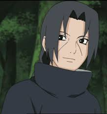

Itachi Uhiha
Itachi Uchiha was a shinobi of Konohagakure's Uchiha clan who served as an Anbu Captain. He later became an international criminal after murdering his entire clan, sparing only his younger brother, Sasuke. He afterwards joined the international criminal organisation known as Akatsuki, whose activity brought him into frequent conflict with Konoha and its ninja — including Sasuke who sought to avenge their clan by killing Itachi. Following his death, Itachi's motives were revealed to be more complicated than they seemed and that his actions were only ever in the interest of his brother and village, making him remain a loyal shinobi of Konohagakure to the very end.
Background
Itachi was the first child born to Mikoto and Fugaku Uchiha. His early childhood was marked with violence: when he was four years old, the Third Shinobi World War waged and he witnessed first-hand many of the war's casualties. The death and destruction he experienced at such a young age traumatised Itachi and made him a pacifist, leading to him training non-stop to achieve his dream of becoming a ninja among ninja in order to erase fighting from the world.
